UNOFFICIAL DEMONSTRATION — NOT A UNIVERSITY DEPLOYMENT.
This walkthrough uses public University of Illinois Urbana-Champaign information to demonstrate configuration
in a Microsoft internal lab. It is not affiliated with, endorsed by, or deployed for the university. No
university tenant, systems, accounts, data, or internal resources are used. For your own deployment, replace
all lab-specific settings with values approved by your organization.
Use this page to install the kit's Higher Education profile (Org-Template) in a
commercial Microsoft 365 tenant. Follow the same eight installation phases as the
GCC Moderate guide and the
canonical Admin Quickstart. The profiles supply different content;
the installation and acceptance boundaries are the same.
Higher education walkthrough video (eight phases)
This narrated walkthrough follows the same eight phases as the
GCC Moderate guide. The footage comes from an internal Microsoft lab
using public University of Illinois Urbana-Champaign pages, so the tenant, account and site names on screen
are lab values, not values to copy.
The video didn't start.
Try reloading the page, or download the MP4 and play it directly. The step-by-step details below cover the same content.
Ten narrated sections (introduction, eight phases, and closing) · English captions included.Use “Play this section” on a phase heading to jump the video there; turn on captions with CC.
Recorded with release 3.8.21. The video is a summary, not a substitute for this page:
use the commands and cautions below, including the naming-policy gate, the STOP / PROCEED prompts, and no routine
-RepairCapturedPages. The footage is from a lab installation and is not a customer acceptance run.
INTRO
In this walkthrough, we'll use the Higher Education template in a commercial Microsoft 365 tenant. The footage was recorded with release 3.8.21, while the commands and guidance are updated for release 3.8.24. We'll follow the same eight phases as the GCC Moderate guide.
This is an unofficial demonstration: the footage uses public University of Illinois Urbana-Champaign pages inside a Microsoft lab tenant, so the tenant, account, and site names you see on screen are lab values, not values to copy.
We'll verify the package, configure the settings, install the site, and review the result. Passing the automated checks is only part of deciding whether a deployment is ready for production.
PHASE 1 - Verify and extract the release package
Download the release 3.8.24 implementation ZIP and its SHA256 receipt, not GitHub's automatically generated source archive.
Run Get-FileHash on the ZIP and compare the result with the expected hash in the receipt. Continue only if they match.
Use a new empty install folder. Copy the Org-Template content pack to a separate organization folder. Keep settings and records outside the extracted kit so a future release cannot overwrite them.
PHASE 2 - Edit the organization settings
Open the Deployment-Settings.json file in the organization folder, not the template inside the kit.
Confirm the tenant, SharePoint hosts, unused group alias, and approved owner and reviewer accounts.
Keep the Team private and external sharing disabled. Set the LearningEnvironment to Higher Education.
If you're creating a new provisioning app, leave the PnP client ID blank. Don't copy another tenant's client ID or deployment report into this folder.
PHASE 3 - Configure support links and reviewed content
Compare each setting with its source. Public policy links can be researched, but private mailboxes, ticket queues, incident routes, and tenant identities must come from the people who own them.
Configure a monitored support mailbox. Then set the links for general support, technology requests, incident reporting, and AI guidance.
Review the governance and training links as well.
Keep lasting changes to generated page text in the organization's Content folder, and approved reference files in Assets.
PHASE 4 - Check the content before signing in
From the extracted kit folder, run the local content preflight against the organization folder. The commands are shown on screen.
This checks the structured content before sign-in, including the calendar columns and required fields. It does not approve the links, tenant settings, policy wording, or reader experience.
Fix every reported issue before continuing.
PHASE 5 - Install PnP.PowerShell and register the app
Use PowerShell 7.4 or later with PnP PowerShell 3.2.0.
If the tenant needs a new provisioning app, have an administrator authorized to grant consent run script 01.
In Entra, confirm that all required delegated permissions are granted, and that Allow public client flows is set to Yes.
Review the group naming policy, and check in the Teams admin center that the apps needed for the Website, PDF, PowerPoint, and SharePoint tabs are available to the installer and intended users.
PHASE 6 - Run the customer installation
Run script 02 with SeedDemoContent. That switch loads the site's pages, catalogs, calendar, and governance content.
Before creating resources, check the signed-in account, tenant, alias, owner, and target address.
If the installer flags a naming policy issue, an unconfigured route, or a lab mailbox, stop and review it. Choosing Proceed is a documented pilot decision, not production approval.
After installation, use the actual site address recorded in the deployment report. If an earlier attempt already created resources for the alias, follow the recovery procedure instead of starting another clean installation.
PHASE 7 - Run the checker and complete the manual review
Run the read-only checker with the organization folder, the actual site address, and the same ContentMode. Resolve every failure, and read each warning.
Review Home, the tool pages, navigation, and catalog views as a regular reader. Follow the support and governance links.
Confirm the Team is private, external sharing is disabled, no demo content remains, and each standard channel has exactly one correct welcome post. Check posts visually; the app can't read them back without extra permission.
Keep the checker output and the manual review record.
PHASE 8 - Publish the reviewed update and test again
Publish reviewed changes from the organization folder with script 03 and interactive sign-in. Then run the same read-only checker and repeat the relevant manual review.
Do not add RepairCapturedPages for a routine update; it can replace managed parts of Home and the captured pages.
Complete the handoff only when both checker runs have passed and the required manual reviews are documented for this tenant.
OUTRO
Passing the checker is not the same as production approval. The organization still needs to approve the content, security, accessibility, and operating arrangements.
Keep the organization settings, deployment reports, run logs, both checker outputs, and manual review records together.
For recovery or removal, use the administrator guide included with release 3.8.24.
Separate public information from tenant settings
Use only publicly published university material as research. An authorized tenant administrator and the
teams responsible for support and security must supply or confirm private settings. The internal lab footage
used to prepare the walkthrough is not a university deployment or an approval of university policy.
Published university name, AI guidance, public training and
records guidance may inform the starter content. The public support contact used in this demo is
consult@illinois.edu. These links are not proof of this kit's adoption or approved tenant
support routes.
Tenant and operational values
Do not infer
Tenant, SharePoint hosts, the installer/owner identity,
PnPClientID, support mailbox, incident route, or reader permissions from a public site.
Get those from an authorized administrator or route owner.
For the equivalent government public-source boundary, see the
GCC Moderate runbook.
Choose content and environment separately
Content profile
Higher education uses Org-Template and LearningEnvironment: HigherEducation.
Environment
This walkthrough targets commercial Microsoft 365 only. GCC Moderate, GCC High, and DoD are out of
scope here; use the separate GCC Moderate runbook for a
state or local government deployment in GCC Moderate.
Environment boundary: this walkthrough covers commercial Microsoft 365
only. A prior acceptance result does not replace acceptance in another customer tenant.
PowerShell 7 terminal, confirming the correct lab tenant before any kit command runs.
Run each block separately in PowerShell 7.4 or later (pwsh). Use the frozen
implementation ZIP and its matching release receipt. Release 3.8.24 SHA256:
GitHub ZIP distinction: download the named
Copilot-CoE-Implementation-Kit.zip
release asset and verify it against the attached
.sha256 receipt.
GitHub's automatic Source code (zip), Source code (tar.gz), and repository
Download ZIP are source snapshots, not installation packages.
1. Set the paths
if ($PSVersionTable.PSVersion -lt [version]'7.4') {
throw 'Open PowerShell 7.4 or later (pwsh). The kit scripts require it.'
}
$zip = 'C:\CoE-Releases\Copilot-CoE-Implementation-Kit.zip'
$receipt = 'C:\CoE-Releases\Copilot-CoE-Implementation-Kit.zip.sha256'
$expectedHash = 'EFD59EDD830FDBE4FC7C83ECCA1163AAE98818234C645E71B1B7595D7B91BA9D'
$installRoot = 'C:\CoE-Install\DemoOrg-v3.8.24'
$kitRoot = Join-Path $installRoot '03_Build\CopilotCoE-Kit'
$orgPath = 'C:\CoE-Orgs\DemoOrg'
2. Verify the ZIP and receipt
$zipHash = (Get-FileHash -LiteralPath $zip -Algorithm SHA256).Hash
$receiptHash = ((Get-Content -LiteralPath $receipt -Raw).Trim() -split '\s+')[0]
if ($zipHash -ne $expectedHash -or $receiptHash -ne $expectedHash) {
throw 'The implementation ZIP or its receipt does not match release 3.8.24.'
}
Write-Host 'Release ZIP and receipt verified.'
3. Unblock the ZIP before extraction
Unblock-File -LiteralPath $zip
Write-Host 'ZIP unblocked. It is now safe to extract.'
GUI equivalent: right-click the ZIP, select Properties, select Unblock if
shown, and select OK before Extract All.
Already extracted while blocked? A message that a .ps1 file
is not digitally signed means Windows blocked the downloaded content before PowerShell could load it.
Delete that extraction and start again from the unblocked ZIP (recommended), or run:
Get-ChildItem -LiteralPath $installRoot -Recurse -File | Unblock-File.
$kitRoot contains the installer. $orgPath contains the
organization's settings, content overrides, and approved assets. Keep the organization folder outside the
extracted kit. Future kit extraction must not overwrite settings, content, assets, transcripts, or
deployment identity records.
02Edit the organization settings file
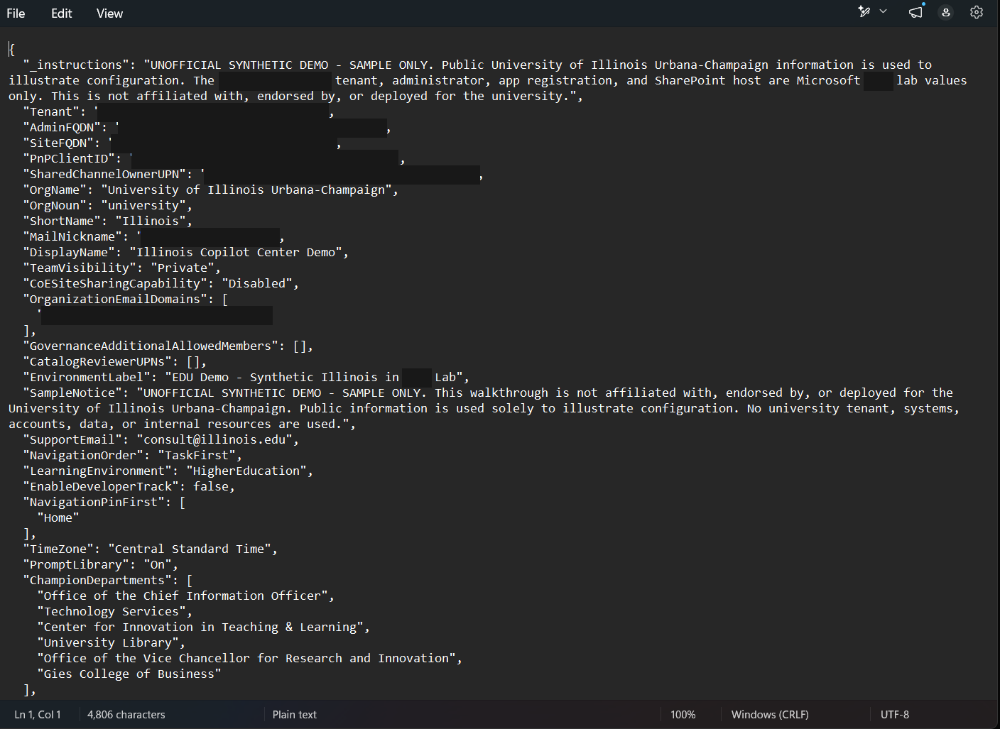
Deployment settings used in the lab recording.
Edit $orgPath\Deployment-Settings.json. Do not edit the copies under
$kitRoot or $kitRoot\Org-Template.
JSON field
Higher-ed value
Where the value comes from
Tenant
The primary .onmicrosoft.com domain
Confirm with the tenant administrator; never infer it from a university web page.
AdminFQDN
SharePoint admin host, no protocol/path
Copy the actual admin-center host from this tenant.
SiteFQDN
SharePoint content host, no protocol/path
Copy the actual content host; the team site may use /teams/, not /sites/.
PnPClientID
Blank only when this tenant has no approved kit app
Reuse this tenant's approved app ID and skip script 01; never reuse an app ID from another tenant.
SharedChannelOwnerUPN
Approved in-tenant Member
Obtain from the governance owner; a public university mailbox is not sufficient.
OrgName, OrgNoun, ShortName
Approved university name, university, and abbreviation
Use the organization's actual name and reader-facing language; public branding needs owner review.
MailNickname
Unique Microsoft 365 group alias
Confirm it is unused, including deleted groups/sites. This field sets the Team alias and site path.
DisplayName
Approved Team/hub title, ideally 30 characters or fewer
Longer names trigger an advisory and require a 1366px navigation review.
TeamVisibility
Private
Required by the installer.
CoESiteSharingCapability
Disabled
Customer default; external preview needs separate approval.
OrganizationEmailDomains
Approved in-tenant UPN domains
Get from the identity/security owner, not another deployment.
GovernanceAdditionalAllowedMembers
Approved UPNs or []
Only in-tenant Members approved for restricted channels.
CatalogReviewerUPNs
Approved UPNs or []
Catalog approval reviewers; do not copy a lab account.
EnvironmentLabel
Production, Pilot, or approved label
Reader-facing operational owner decision.
SampleNotice
none after Customer content approval
Demo mode requires a visible disclaimer. Blank does not mean no notice.
SupportEmail
Approved, monitored support mailbox
Confirm owner and monitoring; an admin lab address triggers a WARN, not production approval.
TimeZone
Windows time-zone ID
Confirm regional schedule, for example Eastern Standard Time.
LearningEnvironment
HigherEducation
Selects the supported learning and tool experience.
Start with the pack's values; replace only with approved university language.
ScenarioLibraryUrl
Higher-ed scenario library URL
Retain the pack's public Microsoft adoption link or use an approved alternative.
All fields in this comparison are edited in $orgPath\Deployment-Settings.json. The
third column describes where to obtain each value, not another file to modify.
New tenant: do not copy PnPClientID,
CoE-Revision-Report.json, CoE-Removal-Manifest.json,
CoE-Purge-Receipt.json, advisory decisions, wrapper state, or
RevisionAudit from another deployment.
03Configure support, governance, and reviewed content
Use routes supplied or approved by their owners. Do not infer private mailboxes, ticket queues, incident
endpoints, or tenant values from a public website.
"Links": {
"ServiceDesk": "https://www.techservices.illinois.edu/get-help/it-service-desk/",
"TechnologyRequest": "https://help.uillinois.edu/TDClient/42/UIUC/Requests/ServiceCatalog",
"DataSafetyIncident": "https://www.cybersecurity.illinois.edu/cybersecurity/report-a-cybersecurity-incident/",
"AIGuidelines": "https://genai.illinois.edu/ethical-and-responsible-use-of-generative-ai/"
},
"GovernanceLinks": [
{ "label": "Ethical and responsible use of generative AI", "url": "https://genai.illinois.edu/ethical-and-responsible-use-of-generative-ai/" },
{ "label": "Data handling and intellectual property best practices", "url": "https://genai.illinois.edu/best-practice-data-handling-and-intellectual-property/" },
{ "label": "Microsoft Copilot Chat guidance", "url": "https://genai.illinois.edu/ai-apps-copilot-chat/" }
]
Field or folder
Required review
SupportEmail
Monitored mailbox behind generated CoE mail links.
Links.ServiceDesk
General technical-support route.
Links.TechnologyRequest
Approved software, service, or AI request process.
Links.DataSafetyIncident
Approved security/data incident route, separate from ordinary feedback.
Links.AIGuidelines
Current responsible-AI or acceptable-use guidance.
Links.AboutOrg
Official public organization page, if applicable.
Links.PromptLibrary, Links.LearningSystem
Optional approved destinations; blank is allowed.
GovernanceLinks, TrainingLinks
Reviewed labels and URLs shown on generated pages.
ChampionDepartments, Agents
Real reviewed units and agent records; remove sample proposals.
$orgPath\Content
Organization text overrides. Review every illustrative governance draft.
$orgPath\Assets
Approved files only. Review before using -AcceptOrgAssets.
If any of the four Links routes is empty, script 02 asks STOP / PROCEED before it creates anything
(see Step 06). PROCEED publishes a visible “route not configured” notice, not a working endpoint.
Change
Edit here
What happens on script 03
Tenant, identity, profile, approved routes and title
$orgPath\Deployment-Settings.json
Most content values republish; tenant, alias and governance owner are fixed at install.
Guides, policies, catalog seeds and training calendar
$orgPath\Content
Managed pages can be replaced. Changed governance drafts require deliberate -ReplaceFiles.
Reviewed documents, images and videos
$orgPath\Assets
New files require an explicit hosting decision; review every asset.
Observed site, Team ID and run evidence
$orgPath\CoE-Revision-Report.json and RevisionAudit
Generated records. Preserve them; never edit them to force another deployment.
The dot and space are required.. .\Internal\ContentPreflight.ps1 dot-sources the file into the current session. Running only
.\Internal\ContentPreflight.ps1 can appear to do nothing and does not retain the assertion
function. The assertion can also finish silently when no organization training-calendar override exists;
Get-Command and the completion message make success explicit.
This checks organization content locally. It does not validate tenant identity, permissions,
URLs, support monitoring, policy approval, or reader experience.
05Install PnP.PowerShell and register the tenant app
Reuse an existing approved app; do not rerun script 01. Put its Application
(client) ID in PnPClientID, verify the permissions and public-client setting below, and continue
to Step 06. Script 01 creates a new app rather than updating the old one. Rerunning it creates a duplicate,
overwrites this profile's PnPClientID, and leaves the prior app in Entra.
1. Install and verify the required local module
Use the copy button for the command block below. Do not paste terminal prompt text such as
PS C:\...>, continuation prompts such as >>, or prior error output.
# Re-enter the actual paths if you opened a new PowerShell window.
$kitRoot = 'C:\CoE-Install\DemoOrg-v3.8.24\03_Build\CopilotCoE-Kit'
$orgPath = 'C:\CoE-Orgs\DemoOrg'
Set-Location -LiteralPath $kitRoot
if (-not (Get-Module PnP.PowerShell -ListAvailable |
Where-Object Version -eq ([version]'3.2.0'))) {
if (-not (Get-PSResourceRepository -Name PSGallery -ErrorAction SilentlyContinue)) {
Register-PSResourceRepository -PSGallery
}
Install-PSResource PnP.PowerShell -Version 3.2.0 -Scope CurrentUser `
-Repository PSGallery -TrustRepository
}
Import-Module PnP.PowerShell -RequiredVersion 3.2.0 -ErrorAction Stop
Get-Module PnP.PowerShell -ListAvailable |
Where-Object Version -eq ([version]'3.2.0') |
Select-Object Name, Version, Path
Use Install-PSResource, included with supported PowerShell 7 releases. The repository check
handles machines where PowerShell Gallery is not registered and avoids the legacy
PowerShellGet autoload failure associated with Install-Module.
2. Only when this tenant has no approved kit app, register one
# Keep this block self-contained if it is run in another PowerShell window.
$kitRoot = 'C:\CoE-Install\DemoOrg-v3.8.24\03_Build\CopilotCoE-Kit'
$orgPath = 'C:\CoE-Orgs\DemoOrg'
Set-Location -LiteralPath $kitRoot
.\01_Register-CoEProvisioningApp.ps1 -OrgPath $orgPath -Interactive
# Confirm script 01 saved a non-empty client ID.
(Get-Content (Join-Path $orgPath 'Deployment-Settings.json') -Raw | ConvertFrom-Json).PnPClientID
Running pwsh starts another PowerShell session and clears ordinary variables such as
$kitRoot and $orgPath. Re-enter the paths in that new session before using a
relative .\ script path.
When no approved app exists, run script 01 once as an approved consent approver. It creates the single-tenant
Copilot CoE Provisioning (PnP) app and saves its client ID in the organization settings file.
Never copy that ID to another tenant.
In Microsoft Entra, grant tenant-wide admin consent and confirm these delegated permissions show
Granted:
Microsoft Graph: Group.ReadWrite.All, ChannelMember.ReadWrite.All,
User.Read, and User.Read.All
SharePoint: AllSites.FullControl
On the same app, open Authentication > Settings and confirm Allow public client
flows is Yes. Script 01 does not change this setting; it checks it and, if it is off,
stops after saving PnPClientID with the exact Entra path. Turn it on, save, and continue. Scripts
02, 03, 04 and the checker run the same check before sign-in.
Gate before Step 06: group naming policy and installer identity. Open
Entra admin center > Groups > Naming policy. If a prefix or suffix is configured, it is
applied to the CoE alias too; script 02 would then create the Team and site but fail to find them, and a second
run would create another. Run Step 06 as a Global Administrator or User Administrator (activate the role
first if it is eligible through Privileged Identity Management), which are exempt, or have the policy changed for
the install. Script 02 tries to read the policy, but this app's least-privilege permissions often cannot, so do
not rely on its warning. Also run Step 06 as the SharedChannelOwnerUPN account or as a Global
Administrator; other operators are untested for writing the governance documents.
Before installation, confirm in Teams admin center that the installer and intended CoE users can use these
built-in tab providers:
Use Teams apps > Manage apps. Under app-centric management, App status:
Unblocked is not sufficient when Available to says No one; that
still denies every user. Select the Microsoft app row and choose Edit availability (or
Users and groups > Availability) for the approved users/groups. Do not use
Add to team as a substitute. Under legacy app permission policies, verify the policy assigned
to the installer and intended users. Policy changes can take hours and up to 24 hours.
06Run the clean Customer install
$ErrorActionPreference = 'Stop'
$kitRoot = 'C:\CoE-Install\DemoOrg-v3.8.24\03_Build\CopilotCoE-Kit'
$orgPath = 'C:\CoE-Orgs\DemoOrg'
$contentMode = 'Customer'
Set-Location -LiteralPath $kitRoot
$settings = Get-Content (Join-Path $orgPath 'Deployment-Settings.json') -Raw | ConvertFrom-Json
if ([string]::IsNullOrWhiteSpace($settings.PnPClientID)) {
throw 'Run script 01 and grant admin consent before installation.'
}
try {
& .\02_Install-CopilotCoE.ps1 `
-OrgPath $orgPath `
-ContentMode $contentMode `
-SeedDemoContent
} catch {
Write-Host 'Installer did not complete. Stop here: keep the transcript in RevisionAudit, do not start clean or purge, and see Failure and recovery below.' -ForegroundColor Red
throw
}
Run this installation block by itself and wait for script 02 to print its completion message. Do not run the
report-reading or checker block after a failed or partial installation.
MailNickname chooses the Team alias and SharePoint site path. $siteUrl is read from
the deployment report after a completed install and is used only by the checker; changing it does not change the
install target.
-SeedDemoContent is still required in Customer mode because it publishes the managed pages,
catalogs, calendar, and governance content. Customer mode filters generated demonstration notices and sample
rows. This recorded lab used Demo mode to retain demonstration notices; review source files and existing site
content yourself, since changing the mode does not replace that review.
Before creation, read the signed-in account, tenant, group-naming-policy warning, alias,
owner, and target URL printed by the script. Stop if any value is wrong.
STOP / PROCEED prompts
Script 02 pauses for some conditions and asks you to type STOP or PROCEED. Pressing
Enter means STOP, which ends the run. Prompts that appear before anything is created are safe to
stop at; correct the setting and run Step 06 again. HeaderLayout and
ParentTeamExternalMembers appear after the Team and site exist: if you stop there, fix the cause and
resume that deployment with -ResumeExisting (see Failure and recovery); do not start a clean
install.
Prompt
When it appears
What to do
LongDisplayName
Title longer than 30 characters.
Shorten DisplayName, or PROCEED and capture a 1366px screenshot of the navigation.
UnconfiguredSupportRoutes
One or more of the four Links routes is empty.
Add the approved routes, or PROCEED for a reviewed pilot only.
LabSupportMailbox
SupportEmail looks like a lab mailbox.
Replace it with the university's monitored mailbox.
GroupNamingPolicy
A naming policy was read and the operator is not exempt.
STOP and rerun as Global Administrator or User Administrator.
OwnerDiffersFromOperator
The signed-in account is not SharedChannelOwnerUPN.
STOP and sign in as the owner or a Global Administrator, unless tested.
HeaderLayout
The Extended site header is unavailable (after the site exists).
PROCEED and capture a 1366px screenshot.
ParentTeamExternalMembers
Guests or out-of-domain members are on the parent Team (after the site exists).
Review membership with the security owner.
Decisions are saved in $orgPath\CoE-Advisory-Decisions.json, tied to this tenant, host
and alias, and reused on the next run. A saved STOP stays a stop until you fix the setting or remove that entry.
PROCEED does not approve content or replace manual acceptance.
Expected optional naming-policy warning:The group naming policy could not be read (Insufficient privileges...). The delegated CoE app
intentionally does not request broad Directory.Read.All, so this optional
groupSettings read can fail even when the signed-in person is Global Administrator. The warning
is non-blocking and does not mean the administrator lacks the roles needed for installation. Do not grant
Directory.Read.All solely to remove it. It also does not prove that no naming policy exists, which
is why the Step 05 gate checks Entra admin center > Groups > Naming policy before this
step. If the run creates and finds the exact configured alias and proceeds to template application, the alias
was not rewritten for that run.
What the installer does
Organization folder: C:\CoE-Orgs\DemoOrg
Using settings from C:\CoE-Orgs\DemoOrg\Deployment-Settings.json (command-line values override it).
Connecting to the specified tenant administrator endpoint using Interactive sign-in.WARNING: The group naming policy could not be read (Insufficient privileges to complete the operation.).Read-only preflight passed. Creating the Private Illinois Copilot CoE Team and its SharePoint site.
Title Url
----- ---
Illinois Copilot Center Demo https://yourtenant.sharepoint.com/sites/CopilotCoEDemo
Applying site sharing 'Disabled' (owners only)
Disabling non-owner sharing
[11:19:04] START Success Stories catalog
[11:19:31] DONE Success Stories catalog - added 4, preserved 0
[11:19:31] START Learning Paths catalog
[11:20:31] DONE Learning Paths catalog - added 18, preserved 0
[11:20:31] START Agent Showcase catalog
[11:21:13] DONE Agent Showcase catalog - added 2, preserved 0
[11:21:13] START Prompt Library catalog
[11:21:49] Prompts added - 25 of 230
[11:22:36] Prompts added - 100 of 230
[11:23:40] Prompts added - 200 of 230
[11:24:17] DONE Prompt Library catalog - added 230, preserved 0
[11:24:18] START Home page and hub repair
[11:25:49] DONE Home page and hub repair
[11:26:10] START horizontal mega-menu navigation
[11:27:37] DONE horizontal mega-menu navigation - 6 top-level link(s)
COE SECURITY POSTURE (live checks; not a substitute for your organization's security approval)
Team visibility: Private [PASS] (required: Private)
Parent site external sharing: OFF (Disabled) [PASS]
Leadership Governance external sharing: OFF (Disabled) [PASS]
Program Governance external sharing: OFF (Disabled) [PASS]Submitted the prepared welcome post to 'Share Your Prompt'. Verify it in Teams.
Submitted the prepared welcome post to 'Ask Us Anything'. Verify it in Teams.
Submitted the prepared welcome post to 'General'. Verify it in Teams.
Next: verify the site with .\Test-CoEInstall.ps1 -OrgPath <your organization folder> -SiteUrl $siteUrl -ContentMode $contentMode
02_Install-CopilotCoE finished in 2143s (about 36 minutes).
Historical 3.8.21 Demo console output. The higher-ed prompt library contains 230 prompts and
takes the longest of the catalog steps shown. Save the site address exactly as printed. The installer saves
CoE-Revision-Report.json beside Deployment-Settings.json in the organization folder,
and the run transcripts in the RevisionAudit subfolder.
07Run the checker and complete manual acceptance
$kitRoot = 'C:\CoE-Install\DemoOrg-v3.8.24\03_Build\CopilotCoE-Kit'
$orgPath = 'C:\CoE-Orgs\DemoOrg'
$contentMode = 'Customer'
Set-Location -LiteralPath $kitRoot
$reportPath = Join-Path $orgPath 'CoE-Revision-Report.json'
if (-not (Test-Path -LiteralPath $reportPath -PathType Leaf)) {
throw 'No completed deployment report exists. Stop and investigate the installation.'
}
$siteUrl = (Get-Content -LiteralPath $reportPath -Raw | ConvertFrom-Json).Site
if ([string]::IsNullOrWhiteSpace($siteUrl)) {
throw 'The completed deployment report has no site URL.'
}
.\Test-CoEInstall.ps1 `
-OrgPath $orgPath `
-SiteUrl $siteUrl `
-ContentMode $contentMode
if ($LASTEXITCODE -ne 0) { throw 'Checker failed; stop and investigate.' }
Expected: ALL CHECKS PASSED (...), with every WARN reviewed manually.
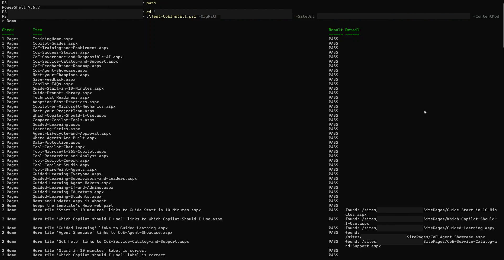
Historical 3.8.21 Demo recording: 292 checks passed. Counts depend on release, content mode, and
applicable checks; do not require that count for another tenant.
Fix every FAIL. Read every WARN and retain evidence for each manual check. At minimum:
Confirm the Home page, navigation, tools, learning paths, support, governance, and catalog views.
Confirm exactly one welcome post in General, Share Your Prompt, and Ask Us Anything.
Confirm no demo notice or sample row remains in Customer mode.
Confirm Team visibility is Private and all three SharePoint sites have external sharing disabled.
Confirm support, technology-request, AI-guidance, and incident links reach approved destinations.
The provisioning app can send welcome posts but normally cannot read them back without
ChannelMessage.Read.All. A checker WARN for that permission is resolved by visual review; do not
add the permission solely to eliminate the WARN.
Review SharePoint as an administrator
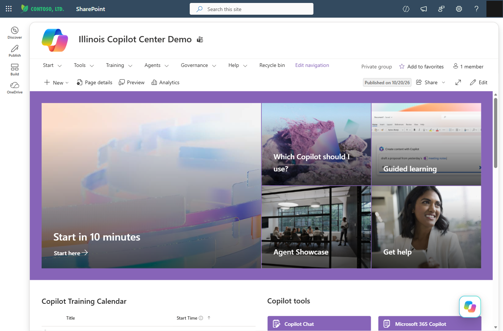
Home — task tiles and the demonstration notice.
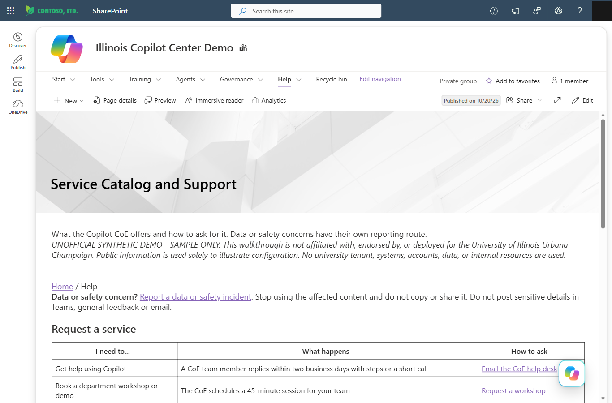
Service Catalog and Support — support, request, and incident links.
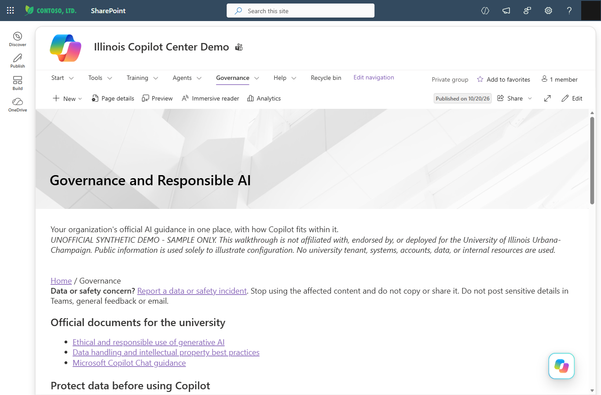
Governance — links to the university's public AI guidance pages.
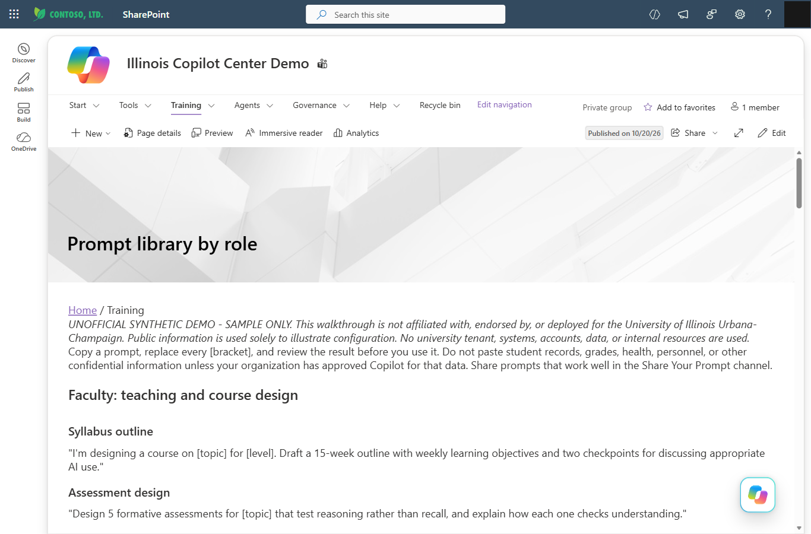
Prompt library — 230 higher education prompts.
Before opening the production site to users, repeat this review with an account that has reader
access, not owner access. That reader-account review was not performed in this historical recording. Replace
every lab-specific value with one the organization has approved.
Check the welcome messages manually
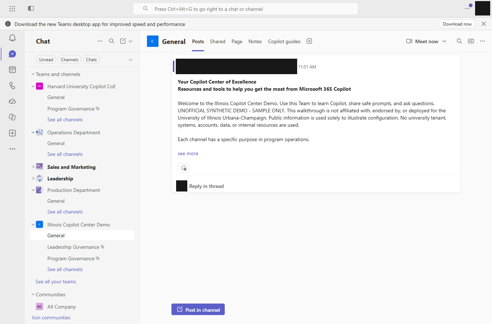
General — one welcome post.
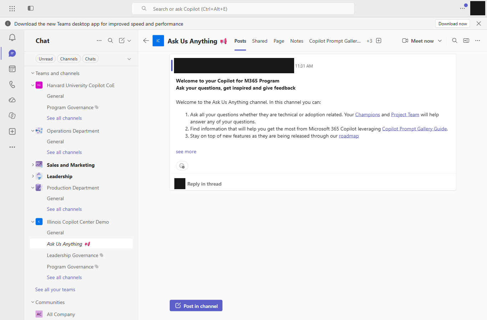
Ask Us Anything — one welcome post.
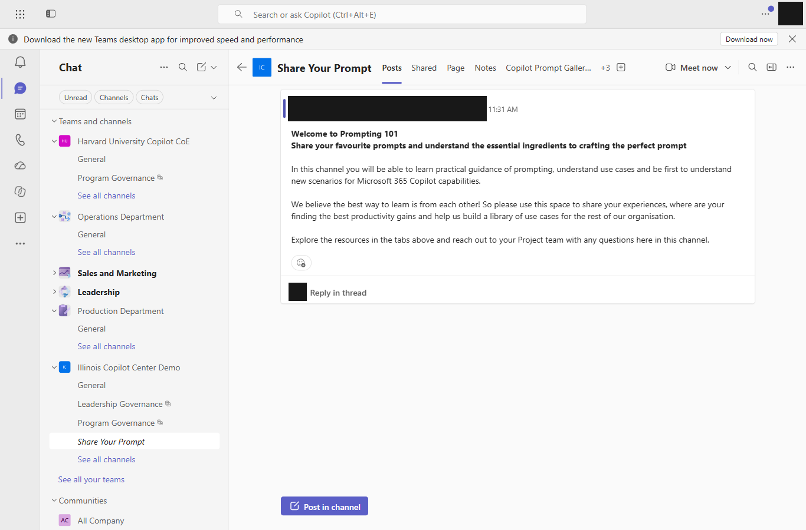
Share Your Prompt — one welcome post.
The provisioning app can send these posts but normally can't read them back, so check them
visually. Confirm that each channel has exactly one prepared welcome post, follow its links, and check the
demonstration notice.
08Publish the reviewed update and check again
Publish the content approved during Step 07 from the organization folder, then run the checker again.
Script 03 replaces the pages it manages, so make lasting changes in $orgPath\Content, not
directly in SharePoint.
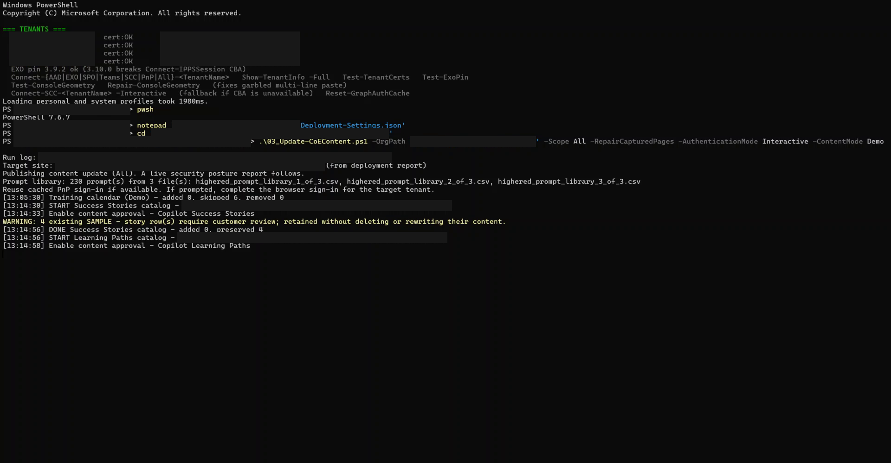
Recording of the update command republishing catalogs on the lab site.
# Add -ReplaceFiles only if governance drafts under $orgPath\Content\Governance changed during review,
# or if reviewers edited the governance Word documents on the site. Without it, 03 stops at the first
# governance document that differs from the organization's draft, after earlier content has been published.
.\03_Update-CoEContent.ps1 `
-OrgPath $orgPath `
-Scope All `
-AuthenticationMode Interactive `
-ContentMode $contentMode
if (-not $?) { throw 'Update did not complete; stop before the second checker.' }
.\Test-CoEInstall.ps1 `
-OrgPath $orgPath `
-SiteUrl $siteUrl `
-ContentMode $contentMode
if ($LASTEXITCODE -ne 0) { throw 'Second checker failed; stop and investigate.' }
Do not add -RepairCapturedPages here. It rebuilds Home and
the captured pages and replaces edits made directly in SharePoint after Step 07. Use it only on an internal
test site, or when recovery work or checker results show that those pages need repair, after reviewing what it
will replace.
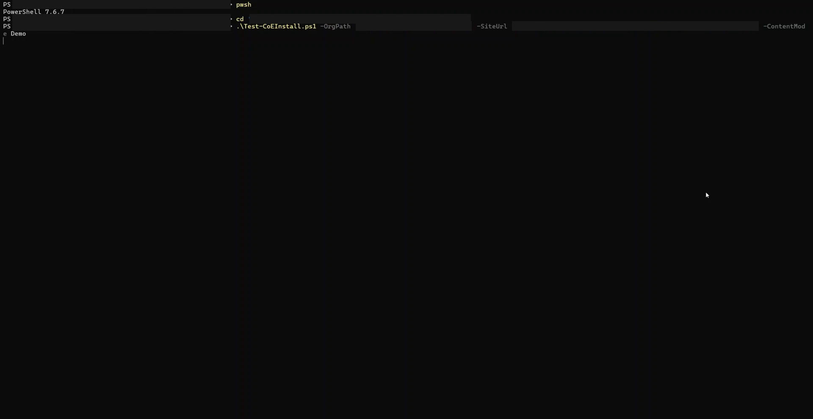
Re-running the same read-only checker after the update.
Keep Deployment-Settings.json, CoE-Revision-Report.json, the
RevisionAudit run transcripts, both checker outputs, and manual review records together for
the handoff. Repeat reader, support-route, security, and welcome-post checks after the update.
Complete only after both checker runs and manual review. The sample
installation and update finished, and the automated checks passed. The administrator's SharePoint review and
the Teams welcome-post review were completed. The group naming policy and reader-account review still require
separate confirmation. Keep Deployment-Settings.json, CoE-Revision-Report.json, all
RevisionAudit transcripts, checker output, and manual acceptance evidence together.
What users get after installation
A written reference for the same areas shown in the walkthrough video. Review the installed content for your
chosen template and configuration; sample guidance is not the organization's official policy.
Area
Reader and administrator review
Home and Start in 10 minutes
Confirm Hero links, tool cards and training-calendar fallback with an ordinary reader account.
Learning paths
Check role-based faculty, staff, student and IT routes; do not mistake site links for course-completion tracking.
Higher-ed prompt library
Review the 230 supplied prompts and organization CSV overrides for records, privacy and approved use before publishing.
Agent Showcase
Approve owner, access, and data sources before making a proposed agent discoverable.
Support and incident reporting
Keep general help, technology requests and security/data incident routes distinct and actually monitored.
Governance and Responsible AI
Replace illustrative governance drafts and policy links with university-approved standards.
Success Stories
Review consent, accessibility, captioned media and exclusion of sensitive or regulated details.
Feedback and Roadmap
Separate Microsoft's public feature availability from the university's own rollout commitments.
For the equivalent eight government site areas, see the
GCC Moderate guide.
Failure and recovery boundary
If the intended Team/site exists after an interrupted run, investigate and resume that exact deployment
with -ResumeExisting.
Do not start a second clean install against the same alias.
Do not delete only the SharePoint site; the Team and Microsoft 365 group remain.
Use 04_Remove-CopilotCoE.ps1 -Purge -WhatIf before any reviewed permanent removal.
Keep the provisioning app until removal reports AliasReusable : True.
If Teams reports “App is blocked by app permission policy” for
com.microsoft.teamspace.tab.web: a Website row showing Unblocked but
Available to: No one is still denied. Select the Microsoft Website row, use
Edit availability, and choose Everyone or an approved group containing the installer and
intended CoE audience. Do not use Add to team. Wait for policy propagation, then resume the existing deployment. Do not start clean
or purge. Inspect General, Share Your Prompt, and Ask Us Anything first; pass only confirmed missing welcome
posts:
# List ONLY the channels you confirmed have no welcome post. Names must match exactly, for example:
# 'General', 'Share Your Prompt', 'Ask Us Anything 📢'
# Leave out -PublishWelcomeToChannels entirely if every channel already has its post.
$missingWelcomeChannels = @()
.\02_Install-CopilotCoE.ps1 `
-OrgPath $orgPath `
-ContentMode $contentMode `
-SeedDemoContent `
-ResumeExisting `
-PublishWelcomeToChannels $missingWelcomeChannels `
-AuthenticationMode Interactive `
-ForceAuthentication
CoE-Revision-Report.json is written only after installation completes. Its absence after a
partial failure is expected; do not continue to report-reading or checker commands until resume succeeds.
For the equivalent government recovery notes, see the
GCC Moderate guide.
Use the current release 3.8.24 implementation ZIP and its release receipt. The receipt identifies the
expected SHA256 hash: EFD59EDD830FDBE4FC7C83ECCA1163AAE98818234C645E71B1B7595D7B91BA9D.
Do not choose GitHub's automatic Source code (zip), Source code (tar.gz), or repository
Download ZIP. Those are source snapshots and are not installation packages.
Keep organization settings and approved overrides outside the extracted kit. This recording
uses delegated interactive sign-in through a tenant-owned Entra app. Installation, content updates,
removal, and read-only validation are separate operations; use the administrator quickstart supplied
with the same release.
91 questions for the administrators who install, check, customize, and maintain the kit — the approved
release and hash, roles and permissions, production-readiness checks, safe customization, and failure
recovery, plus what installation creates in the tenant and what it deliberately leaves alone.
Release 3.8.24. Searchable and filterable by topic, with a direct link to any question. Written
reference material, not part of the narrated video.
Addendum: sharing a CoE site with an external guest
A publicly accessible guide does not make the deployed SharePoint site public. The kit keeps the Team
private and external site sharing disabled by default. Customer installations should retain those
defaults; an approved lab preview for a named guest is a separate decision.
The addendum covers policy checks, the site-level switch, the corresponding organization
setting, Visitors Read access, guest testing, and closing the preview. It does not require making
tenant-wide policy more permissive or enabling anonymous links. It is written reference material,
not part of the narrated video.